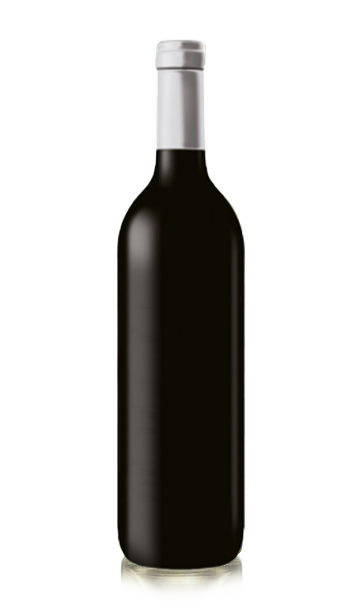
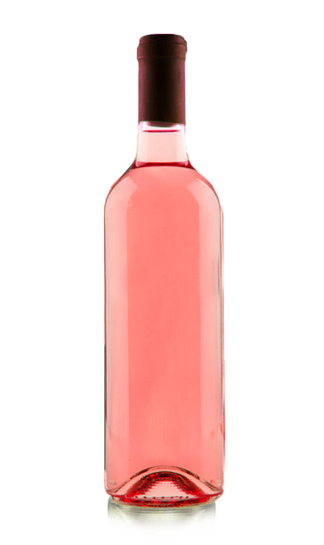

Interiorizate en Nuestros Vinos y sus Beneficios
Vino Blanco $3.800
Beneficios
La ingesta moderada de vino blanco a lo largo de la vida puede prevenir la aparición de enfermedades pulmonares
y mejorar la salud de este órgano. La razón parece ser la cantidad de resveratrol que contiene, ya que, a diferencia
del blanco, el resto de vinos no contribuyen a evitar problemas del sistema respiratorio

Vino Tinto $4.200
Benificios
El vino tinto, con moderación, se ha considerado saludable para el corazón durante mucho tiempo.
El alcohol y ciertas sustancias en el vino tinto llamadas antioxidantes pueden ayudar a prevenir la enfermedad de
las arterias coronarias, la afección que provoca los ataques cardíacos.

Vino Rosado $4.500
Benificios
Además de su suave y agradable sabor, el vino rosado tiene propiedades saludables.
Con moderación, el vino contiene antioxidantes,por lo que una copa al día es una
fantástica forma de mantenerte joven y mejorar la circulación sanguínea.